Roman Verostko [Algorithmic Artist]
Roman Verostko [Algorithmic Artist]
One of Roman's well-known art projects is WIM: The Upsidedown Book. This was released on August 2nd, 2008. This book reproduces drawings that were created in the early 1970's that were set aside to be published later. Many of these drawings belong to the transitional period of Roman's life following his withdrawal from the monastic life to Minneapolis. During this period of time, Verostko was experimenting with computer programming, working as a humanist consultant to the Tetra Corporation, and exploring the new forms of drawings, paintings, and media. The drawings in this book was dedicated to Fred Rogers who said that "the child is in me still, but sometimes not so still. . ." these drawings were made to appeal to all ages.
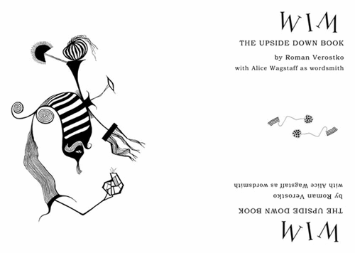 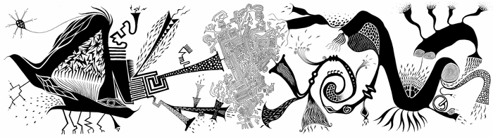The techniques behind these drawings is that Roman was drawing with borders of consciousness, which is a like doodling semi-conscious.
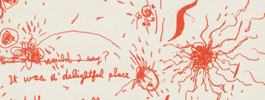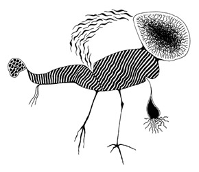There is even a mural in the Fred Rogers Center in Latrobe, Pennsylvania. Inside the main entrance of this impressive center the Upsidedown Mural rises two stories. This project, based on pen and ink drawings created by Roman Verostko in the early 1970's, draws on the same core of whimsical drawings he presents in his Upsidedown Book. For this project, Roman scanned his original drawings at a very high resolution. Then he carefully retouched and scaled each image into working digital files. With these he composed fanciful groupings for 11 large panels scaled precisely for the wall.
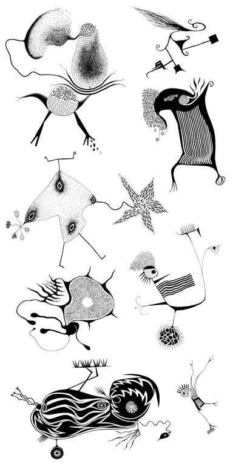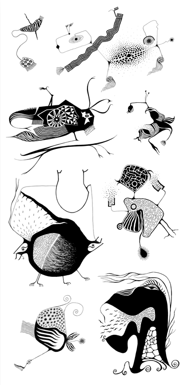 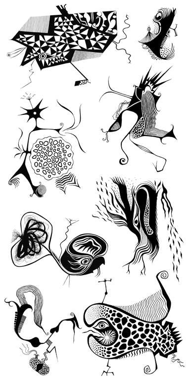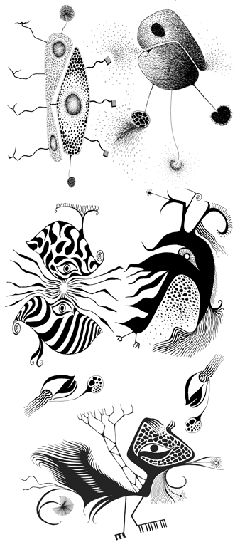 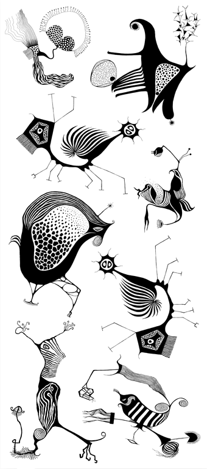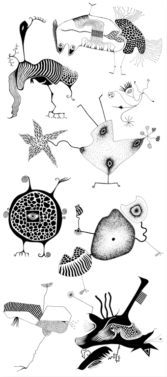 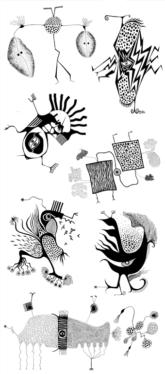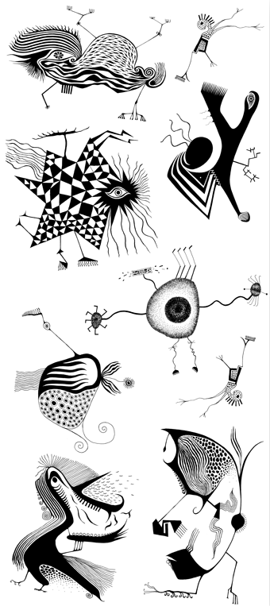 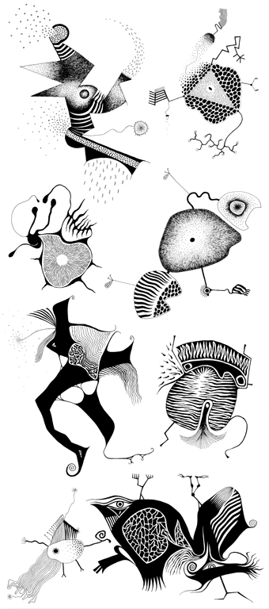These "Decision Machines" provide a playful electronic trigger that yields a random "one bit" event symbolizing "yes" or "no". This is appropriate playfulness As homage to Wiener who observed that "The functional part of physics cannot escape considering uncertainty and the contingency of events."

 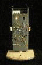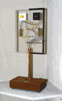
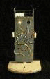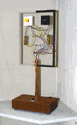
Roman's most recent project has to do with a three story wall machine that draws a picture on the side of a building. This occured on June 4-5, 2001, and lasted almost 8 hours. Here is a short 2 minute clip of the machine in action.